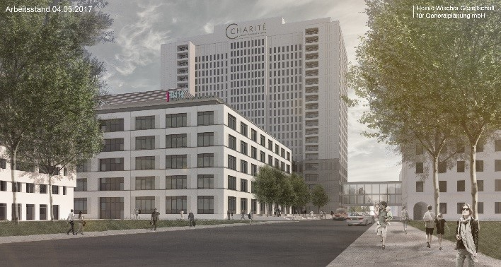

Monitoring of the Project "ATIZ" in Berlin, Germany
We are supporting the delivery of an innovation, translational, clinical research and ambulance centre (ATIZ) for the Berlin Institute of Health.
Key information
- Location:
- Date started:
- 2017
- Completion date:
- 2021
- Client type:
- Health
- Main services:
- Project management, cost and schedule control
Client’s requirements
Charité and the Berlin Institute of Health (BIG) intend to convert the current operating and intensive care unit at the Bettenhochhaus Charité Campus Mitte (CCM), for the use as an outpatient clinic, translation and innovation centre.
The BIG needed a consultant and stakeholder in order to carry out their role as a partner of the Charité in the project phase while also respect-ing their own interests.
- €73,6m value
Our contribution
Turner & Townsend has been commissioned to support the BIG with project management services in relation to the Charité.
The main tasks for Turner & Townsend are the coordination of user requirements, cost and schedule control as well as the definition of required process structures.
Making the difference
- Turner & Townsend acts as the interface between the Charité and the BIG and supports the BIG in ensuring that the required quality standards for the successful implementation of the project are met.
- Turner & Townsend provides qualified professional advice on clinical workflows.
- Turner & Townsend has extensive experience in the construction of research labs and small GMP laboratories for pharmaceutical production.
